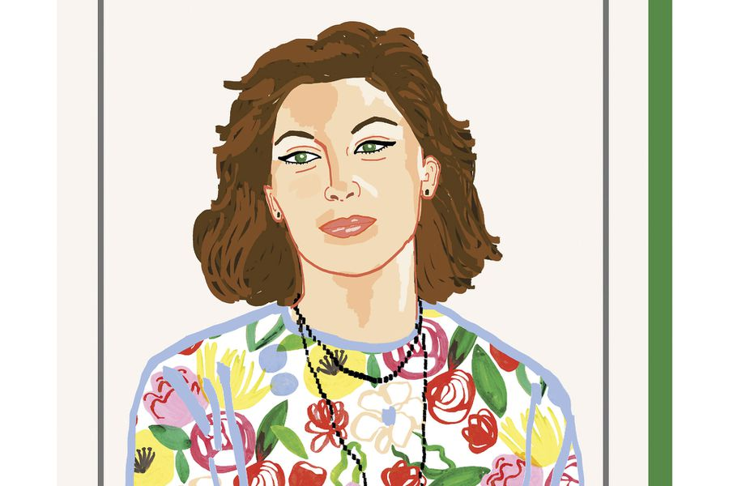

No es que morir nos duela tanto
No es que morir nos duela tanto
es vivir lo que más nos duele
pero el morir es algo diferente
un algo detrás de la puerta.
La costumbre del pájaro de ir al Sur
antes que los hielos lleguen
acepta una mejor latitud
nosotros somos los pájaros que se quedan.
Los temblorosos, rondando la puerta del granjero
mendigando su ocasional migaja
hasta que las compasivas nieves
convencen a nuestras plumas para ir a casa.